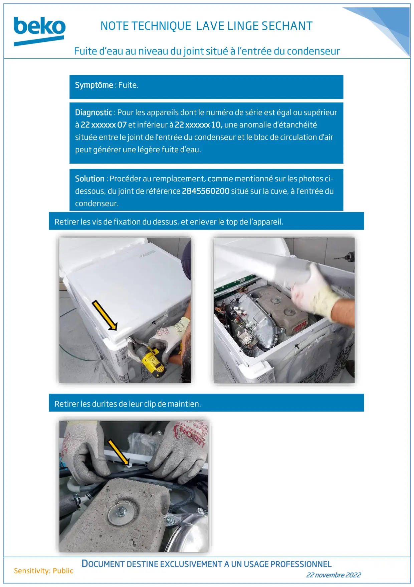
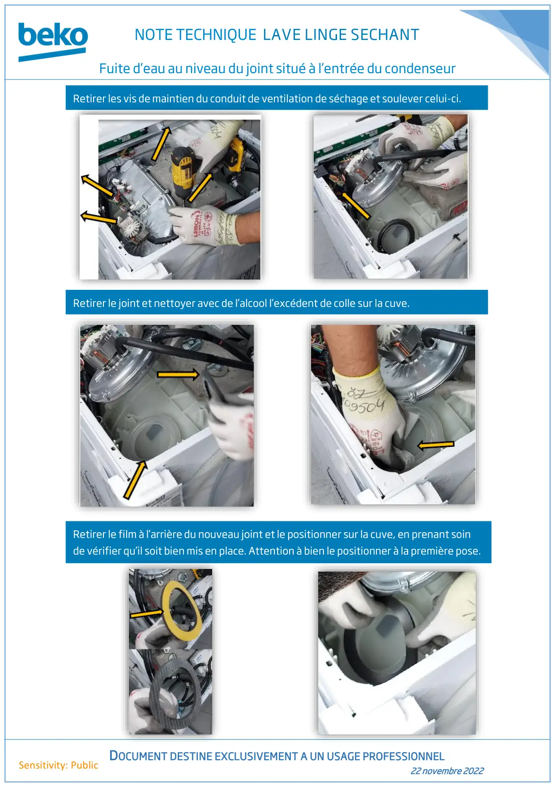
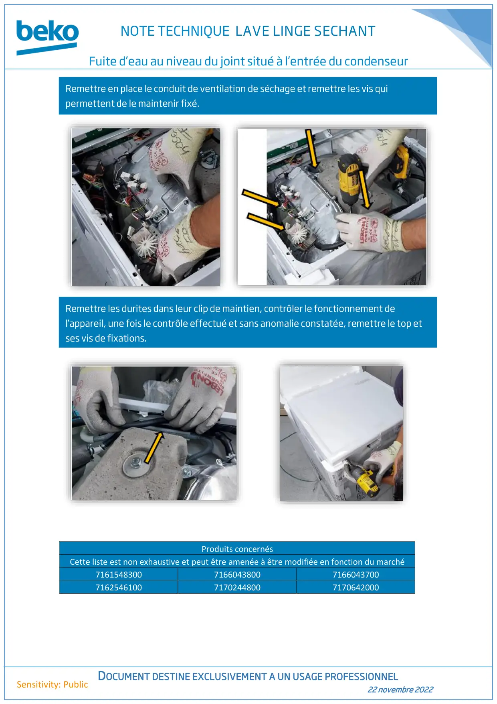

LAVE LINGE SECHANT fuite d'eau au niveau du joint d'entrée de condenseur

NOTE TECHNIQUE LAVE LINGE SECHANTFuite d’eau au niveau du joint situé à l’entrée du condenseurDOCUMENT DESTINE EXCLUSIVEMENT A UN USAGE PROFESSIONNEL22 novembre 2022Sensitivity: PublicSymptôme : Fuite.Diagnostic : Pour les appareils dont le numéro de série est égal ou supérieurà 22 xxxxxx 07 et inférieur à 22 xxxxxx 10, une anomalie d’étanchéitésituée entre le joint de l’entrée du condenseur et le bloc de circulation d’airpeut générer une légère fuite d’eau.Solution : Procéder au remplacement, comme mentionné sur les photos ci-dessous, du joint de référence 2845560200 situé sur la cuve, à l’entrée ducondenseur.Retirer les vis de fixation du dessus, et enlever le top de l’appareil.Retirer les durites de leur clip de maintien.
1 / 3
NOTE TECHNIQUE LAVE LINGE SECHANTFuite d’eau au niveau du joint situé à l’entrée du condenseurDOCUMENT DESTINE EXCLUSIVEMENT A UN USAGE PROFESSIONNEL22 novembre 2022Sensitivity: PublicRetirer les vis de maintien du conduit de ventilation de séchage et soulever celui-ci.Retirer le joint et nettoyer avec de l’alcool l’excédent de colle sur la cuve.Retirer le film à l’arrière du nouveau joint et le positionner sur la cuve, en prenant soinde vérifier qu’il soit bien mis en place. Attention à bien le positionner à la première pose.
2 / 3
NOTE TECHNIQUE LAVE LINGE SECHANTFuite d’eau au niveau du joint situé à l’entrée du condenseurDOCUMENT DESTINE EXCLUSIVEMENT A UN USAGE PROFESSIONNEL22 novembre 2022Sensitivity: PublicProduits concernésCette liste est non exhaustive et peut être amenée à être modifiée en fonction du marché716154830071660438007166043700716254610071702448007170642000Remettre en place le conduit de ventilation de séchage et remettre les vis quipermettent de le maintenir fixé.Remettre les durites dans leur clip de maintien, contrôler le fonctionnement del’appareil, une fois le contrôle effectué et sans anomalie constatée, remettre le top etses vis de fixations.
3 / 3